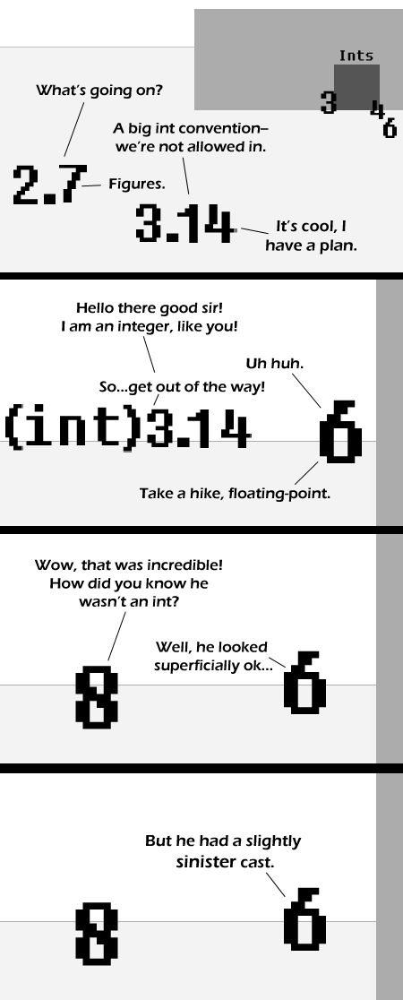

Comic JK 290
When I Feel Like It
⇤
<
?
>
⇥

⇤
<
?
>
⇥
Forum
.
RSS
.
Digg
.
Facebook
.
Reddit
.
Twitter
.
Stumbleupon
The mouseoever text is wrong here... both ints and floats are 32-bit data types, so there is the same number of each. >That's just a standard in programming languages; there are a lot more numbers that have a unique definition in the type of data a float is ultimately supposed to represent. >> We're not talking about decimal numbers here, we're talking about floats, which do have an accepted definition of 32 bits, and so there are just as many as ints. Nope... There are only negative infinity + positive infinity + 1(0)integers. There are an infinite number of floating point numbers between each integer. i.e. between 0 and 1 there numbers from 0.000...1 to 0.999...9 so the number of floating point numbers is infinity to the power of infinity. > I want the computer you do math with! Infinity doesn't really work like that. In any case, the set of integers is countably infinite while the set of reals are uncountably infinite. There are >more< reals even in the interval [0, 1] than there are integers. You can pretty much make that interval as small as you like; it'll still contain more elements as long as you're not looking at an empty set such as [0, 0]. See Cantor's diagonal argument for more details; it's not the only proof that this is the case, but it's probably the easiest to understand. slightly fewer floats than ints... (wasted NaNs) slightly fewer doubles than long ints... (wasted NaNs) however, many more long doubles than long long ints! (80-128 bits compared with 64) Technically, the comic didn't specify the precision of the floating-point. Those could very well be doubles.